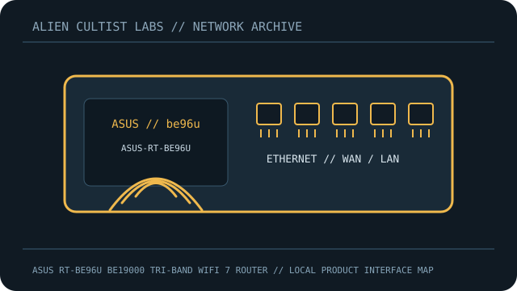

[ MODEL-SPECIFIC NETWORK HARDWARE RECORD ]
ASUS RT-BE96U BE19000 Tri-Band WiFi 7 Router
Tri-band Wi-Fi 7 router with 10GbE and 2.5GbE interfaces.

IDENTIFICATION: Confirm exact model, revision, regulatory region and product label. Link rates are manufacturer maximum PHY/link specifications, not measured payload throughput; features depend on firmware and client capability.
Model-specific specifications and compatibility
| Subcategory | Network appliances: routers & access points |
|---|---|
| Exact product/model | ASUS RT-BE96U BE19000 Tri-Band WiFi 7 Router |
| Ethernet ports and rates | 6 RJ-45: 1x10G WAN/LAN, 1x10G LAN, 1x2.5G WAN/LAN, 3x2.5G LAN; USB 3.x and USB 2.0. |
| Wi-Fi bands and standards | IEEE 802.11a/b/g/n/ac/ax/be Wi-Fi 7: 2.4GHz 4x4 1376Mb/s; 5GHz 4x4 5764Mb/s; 6GHz 4x4 11529Mb/s, Wi-Fi 7. |
| Streams and nominal-rate interpretation | 12 streams (4x4 per band); BE19000 sums PHY rates. |
| Antenna system | Eight fixed external antennas. |
| Management, firmware and security updates | ASUSWRT web/app, AiMesh; WPA3/AiProtection Pro. Regional RT-BE96U firmware/security releases via official support. |
| Power | 19V 3.42A (65W) adapter. |
| Compatibility | 10G/2.5G require matching peers/cable. 6GHz, 320MHz and MLO depend on clients/regulations. |
| Revision / variant | Exact RT-BE96U; no distinct revision stated publicly. Match label/region; not RT-BE88U. |
Revision, management and deployment notes
Revision/variant: Exact RT-BE96U; no distinct revision stated publicly. Match label/region; not RT-BE88U.
Firmware/security updates: ASUSWRT web/app, AiMesh; WPA3/AiProtection Pro. Regional RT-BE96U firmware/security releases via official support.
Power: 19V 3.42A (65W) adapter.
Compatibility: 10G/2.5G require matching peers/cable. 6GHz, 320MHz and MLO depend on clients/regulations.
No throughput or range benchmark is claimed. For testing, record firmware, client, channel, topology and method.
Safety and preservation
Retain adapter/PoE labels and regional SKU, record firmware provenance and remove power before servicing. Do not publish credentials, serial numbers, MAC addresses or private network details.
Manufacturer sources and manuals
- ASUS Wi-Fi 7 product specificationsManufacturer specification source for the model.
- ASUS official manual and support downloadsOfficial manufacturer support, firmware, installation or manual resource.
Use exact model/revision and purchase-region documentation for firmware and regulatory decisions.